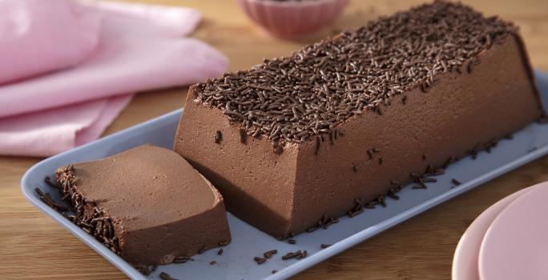
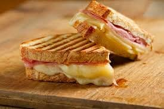

Descubra um mundo de delícias culinárias com nossas receitas, desde tortas clássicas até sorvetes refrescantes. Explore segredos de confeitaria e aprenda técnicas essenciais para criar sobremesas irresistíveis em sua própria cozinha.
Deixe-se envolver pelos aromas tentadores e texturas sedosas, transformando ingredientes simples em sobremesas extraordinárias.
Explore uma variedade de receitas que oferecem uma mistura irresistível de sabores e texturas, aquecendo seu corpo e alma. Nossas receitas de sopas cremosas são nutritivas e deliciosas.
Descubra a arte de criar caldos ricos e mergulhe em sabores reconfortantes que são simplesmente irresistíveis.
Dos clássicos petiscos salgados aos lanches doces e reconfortantes, nossas receitas oferecem uma ampla gama de opções para todos os gostos e ocasiões.
Explore combinações de ingredientes criativas, experimente novos sabores e descubra maneiras divertidas de saciar seus desejos entre as refeições. Com nossas receitas de lanches, você pode transformar momentos cotidianos em experiências memoráveis
